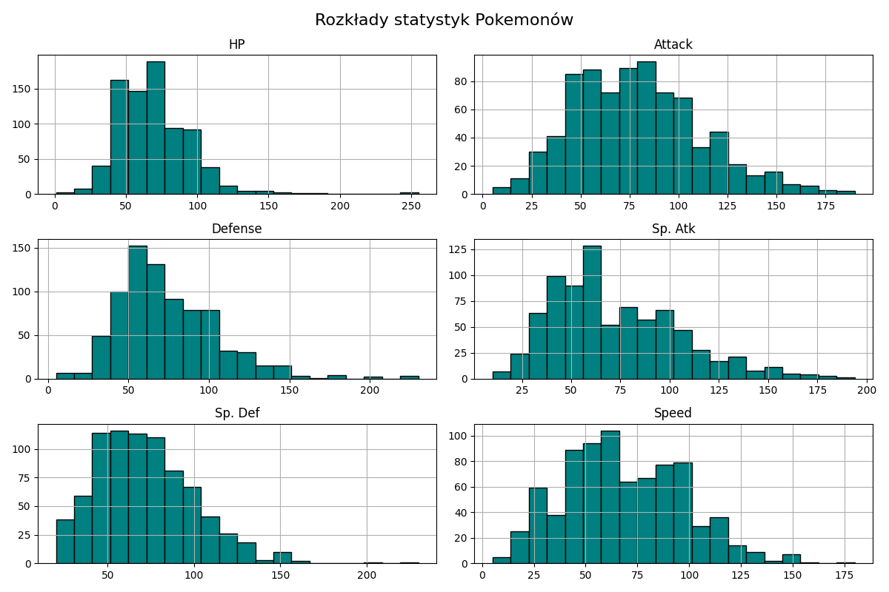
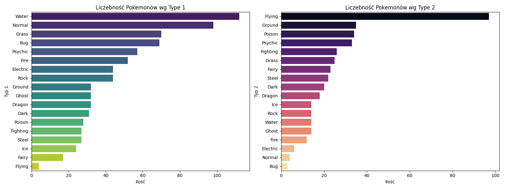
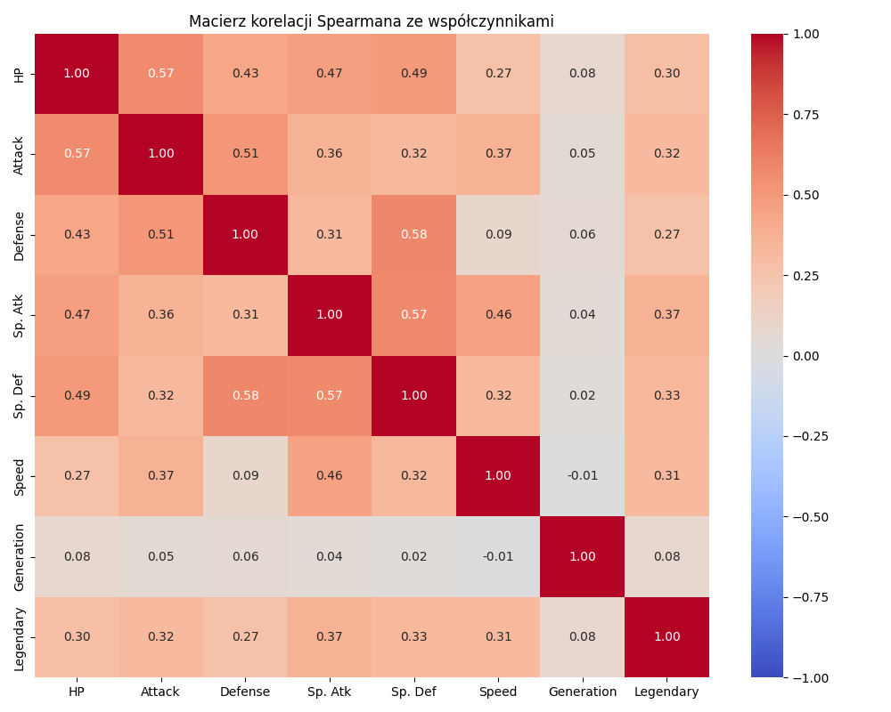
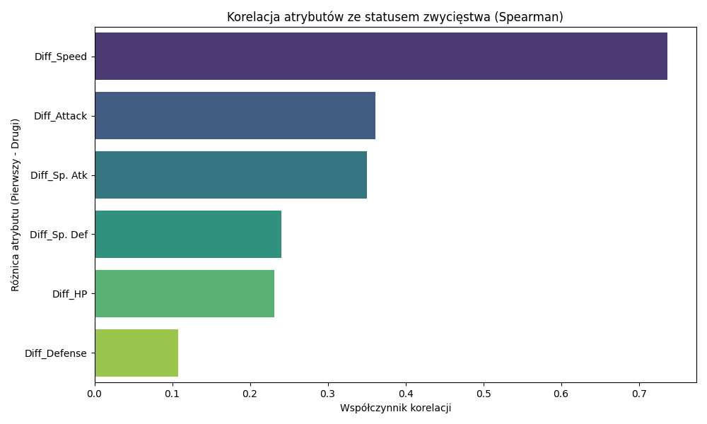
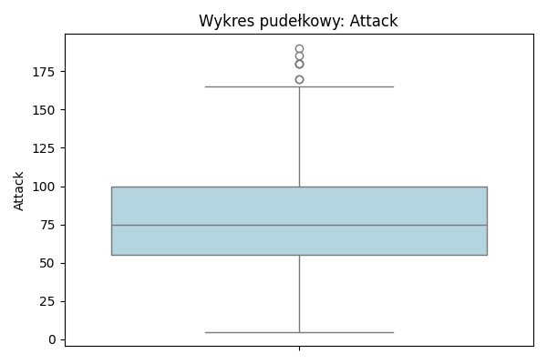

Wartości specjalne: `Legendary` jest atrybutem binarnym i przyjmuje tylko wartości `0` lub `1`.
Wyniki EDA - Rozkłady i wstępne ustalenia
Rozkłady wartości atrybutów numerycznych (`HP`, `Attack`, `Defense`, `Sp.Atk`, `Sp.Def`, `Speed`)
są asymetryczne i odbiegają od normalności;
W histogramach widoczna jest przewaga niższych i średnich wartości oraz długi prawy ogon (reprezentujący
nieliczne, bardzo silne jednostki).
Rozkłady atrybutów nominalnych pokazują, że najczęściej występują typy Wodne i Normalne.
Wstępne ustalenie dotyczące zawartości zbioru: dane mają wystarczającą zmienność i strukturę, aby
przejść do analizy zależności (korelacje).
Wykres: Histogramy statystyk bojowych

Histogramy statystyk bojowych
Wykres: Rozkład typów Pokemonów

EDA - Korelacje Spearmana
Zaobserwowano silnie zgrupowane współzależności pomiędzy elementami siły potwora: `Attack`, `Defense`,
`Sp.Atk`, `Sp.Def` korelują ze sobą.
O wyniku walki najlepiej informują cechy wyrażone jako różnice między statystykami Pokemonów.
Główne Odkrycie: Najważniejszym wektorem odniesienia jest różnica `Diff_Speed` o potężnej
korelacji. Na kolejnych stopniach podium ląduje `Diff_Attack` oraz 'Diff_Sp.Atk', co sugeruje, że przewaga
w szybkości i ataku jest kluczowa dla zwycięstwa.
Wykres: Macierz korelacji Spearmana

Macierz korelacji Spearmana
Wykres: Wpływ cech na wynik walki

Wpływ cech na wynik walki
Analiza i jakość danych
Braki Danych: Odnotowano pojedynczy brak nazwy Pokemona. Duża ilość pustych wartości w `Type 2`
jest efektem w pełni naturalnym, natomiast należało by zmapować je jako "None".
Outliery: Wykazano kilka wartości odbiegających od norm (poza boxplot). Nie są to wartości błędne -
odnoszą się one jedynie do potężnych Pokemonów.
Wizualnie podsumowana jakość danych pozwala nam określić badany cel za wykonalny.
Wykres: Outliery w atrybucie Attack

Outliery w atrybucie Attack (boxplot)
Wnioski końcowe
Największy wpływ na wynik walki mają różnice w parametrach bojowych między dwoma Pokemonami, a nie
pojedyncze wartości cech rozpatrywane osobno.
Analiza korelacji pokazuje, że część atrybutów jest ze sobą silnie powiązana, więc do dalszego modelowania
można rozważyć ograniczenie liczby powtarzających się cech.
Dane są wystarczająco kompletne i spójne, aby przejść do etapu przygotowania modelu klasyfikacyjnego.